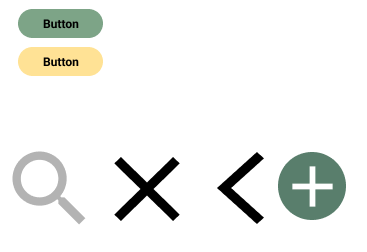
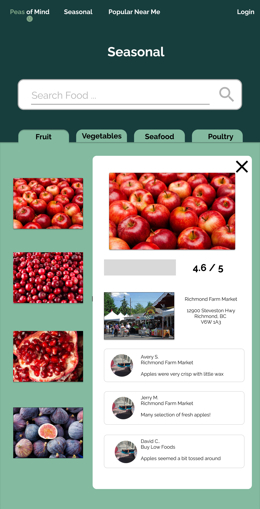

Peas of Mind

UX/UI Design / Research / Wirefrmaing / Prototyping
Background
Peas the Mind is a project developed for the Hack the North 2023 hackathon in Waterloo Ontario. Peas of Mind is an web application that allows users to leave reviews of different fruits, vegetables, and seafood weekly so that other users will be able to find local grocery stores that have the freshest groceries based on the recommendations given.
Goals
Creating an end-to-end mobile application that allows users leave reviews on grocery stores based on their products and allows users to find grocery stores that sell the freshest products based on the recommendations. We observed popular grocery-shopping habits and tried to incorporate features into our app. Our seasonal feature allows users to shop fresh seasonal products, while our Map feature highlight popular vendors in walkable radius to a user’s current location. The search bar allows users to search the product to find which store(s) have the freshest product.
Problem
As students we noticed that most people typically shop at large supermarket chains, that import foods full of preservatives from faraway distribution centres so the food is typically less fresh and healthy while local farms typically have fresher products We wanted to build an app like "Yelp" and "Rotton Tomatoes" to incorporate user reviews that can influence purchasing behaviour to encourage healthy grocery choices and support local grocers and farmers. Large supermarket chains also drive a lot of traffic and business away from smaller local businesses, so we wanted to create an app that would drive more traffic and bring awareness to the smaller local businesses.
My Impact
We wanted to address the problem of difficulty of finding the freshest groceries from local grocery stores, which we acknowledge can be hard to do. We wanted to focus on three things; health and wellness, community engagement, and economic impact.
Feedback
This project was designed to solve a problem that exists in our current economy but can be hard to find a solution. When presenting this project to the judges on a hackathon, they acknowledge that our product does a good job at addressing the problem. However there could be a better solution - instead of leaving user-based recommendations for grocery stores, it would be more beneficial to add an e-commerce solution that would also deliver the freshest groceries to a user's doorstep instead of users having to go out and get them. We will consider this feedback as direction for our next steps.
Research
Goals
Below are the areas I'd like to explore during the user research
I want to understand :
Methodologies
Secondary research on top products related to user reviews and user-based recommendations to create an app that was suitable for the solution for the problem because we noticed that there were not that many apps that addressed the same problem. In-depth user interviews with 10 students or working professionals who would like to improve their shopping habits.
Competitive Audit
For part of this project, I decided to explore top rated and popular apps for users to leave reviews and make decisions based on other user recommednations, and obersve which features allowed to make the app successful to be incorporated inro our product.
Some apps that I had looked at were : Yelp, TooGoodToGo, Rotten Tomatoes
As this was a 36 hour hackathon, from start to finish, we didn't have time to do some aspects of user experience, such as competitive audits, affinity maps, and user interviews. We focused on ideation, wireframing, prototyping, user flows, and user personas
Define
User Persona
I was able to create a persona that represents the main user group : People who leave reviews and people who use the reviews to choose which store(s) to shop at
Use Scenario
After creating my persona, I decided to place him in a specific situation where he can use the product. The primary use case was inspired by synthesized research from the user interviews, competitive analysis showing the niche in the market, and a persona I could fully emphatize with.
The web application allows Chris to choose which grocery store to shop at to by the freshest groceries based on the reviews for a certain product
The web application allows Jasper to leave recommendation for local grocery stores that have the freshest groceries that he likes
Ideation
Initial Task Flows
After having defined the main features of the app with my team, I created flows for the main tasks
User Flow : Launch the app to try to find the best place to shop for strawberries
This user flow assumes the user is using the app for the first time
Task : Launch the app and find a seasonal food to shop fo
This user flow assumes the user is using the app for the first time
App Navigation
Based on the user flow, task flows, and feature roadmap, I designed the simple app map that is functional and easy to navigate
Lo-Fi Wireframes
The first version of the lo-fi wireframes allowed me to run early usability tests and discover the priority revisions that need to be implemented ASAP. This decreased the number of iterations to the later versions with all effort being put into creating the hi-fi interface. The version below inccludes iterations made mainly to the information architecture such as :
UI Kit
I created the UI kit that reflects the Peas the Mind brand adjectives (Convenience, Fresh, and Variety) as well as our core values (Health, Engagement, and Impact).
As the main brand adjective we wanted to focus on was Freshness, it only made sense that the main colour here was green. We used different shades of green to highlight our core values; lighter green was used to represent health, while darker green was used to symbolize economic impact for local markets. Yellow was used as an accent colour, as yellow symbolizes happiness and wellness, and complements green well. We used neutral colours, such as white and cream, to represent simplicity and cleanliness and prevent overcrowding.
Prototype and Test
Hi-Fi Prototype
Usability Testing
I tested the first version of the prototype by talking to my groupmates as well as judges/passerbys to determine the necessary revisions to make the overall experience more intuitive and pleasant.
Main pain points that were discovered during the tests and addressed in the iteration:
Fix : add a feature that allows users to choose a location, and as they type in the location, it will pop up suggessted locations
Fix : made the search bar bigger and more central on the relevant webpages
Fix : made the 'typed' bit in the search bar appear as bolded in the suggestions so the users can see what they are typing as they search
What's Next?
As this was a 36 hours hackathon, I didn't have time to fully implement the features that I would have liked to implement. One of the design areas I would like to improve was added a feature that when the users hovers over an action button, it would change colours to indicate the button can be pressed. I also would make the navigation bar sticky so that wherever the user is on the webpage, they can always access the navigation bar without having to scroll back to the top.
There were some other features I would like to have changed or implemented. One of them was instead of having a static map, it would be a dynamic map where users can search wherever they want.
Conclusion
While working on this project as a team, I realized it was important to define key features of the app before we started working on the project, so that all the designers and developers were on the same page and no one would be doing unnecesasry work or have code/design that didn't align with each other. One instance of this was the search feature; we had decided that we wanted users to seach the product or grocery stores but we didn't account for what the search process would look like, on both the back end and the front end. Another thing I learnt as a designer was that if you are unclear on a design aspect, it really helps to clear things up. Especially with the pop-up menus, I had a different idea than what the developers had in mind, so halfway through the design process, I had to modify the design because I thought the pop-up windows were suppsoed to function for grocery stores, not for the fruit. It is also important for the back-end developers; the databases that the back-end developers were creating were very specific to the function of an element so it was important to have the feature align with its function. Thirdly, although you may have a lot of ideas for what to implement as a designer, because you are working as a team with front-end and back-end develoeprs, it is important to also account for if the design is feasible to build so that the project can run at a timely pace. In my team in particular, we only had one front-end developer so features I added, such as accordian tabs, pop up windows, and autogenerated search suggestions, were quite difficult for one person to implement and resulted in an all-nighter being pulled to be able to submit it on time.